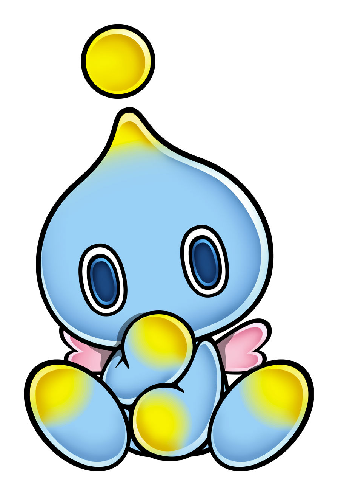

Chao (/tʃaʊ/)[a] are fictional life-forms in the Sonic the Hedgehog video game series published by Sega. They are small, childlike creatures that go through a complex life cycle and exist in several visual forms depending on how they are raised. Developer Sonic Team incorporated Chao into the games to encourage players to explore levels and support the good–evil dichotomy of Sonic Adventure 2.
